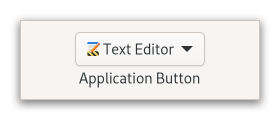

Gtk.AppChooserButton¶
Example¶
- Subclasses
None
Methods¶
- Inherited
Gtk.Widget (180), GObject.Object (37), Gtk.Accessible (15), Gtk.Buildable (1), Gtk.AppChooser (3)
- Structs
class |
|
|
|
|
|
|
|
|
|
|
|
|
|
|
|
|
Virtual Methods¶
Properties¶
- Inherited
Name |
Type |
Flags |
Short Description |
|---|---|---|---|
r/w/en |
|||
r/w/c/en |
|||
r/w/c/en |
|||
r/w/c/en |
Signals¶
- Inherited
Name |
Short Description |
|---|---|
Emitted to when the button is activated. |
|
Emitted when the active application changes. |
|
Emitted when a custom item is activated. |
Fields¶
- Inherited
Class Details¶
- class Gtk.AppChooserButton(**kwargs)¶
- Bases
- Abstract
No
The
GtkAppChooserButtonlets the user select an application.An example
Gtk.AppChooserButtonInitially, a
GtkAppChooserButtonselects the first application in its list, which will either be the most-recently used application or, if [property`Gtk`.AppChooserButton:show-default-item] isTrue, the default application.The list of applications shown in a
GtkAppChooserButtonincludes the recommended applications for the given content type. When [property`Gtk`.AppChooserButton:show-default-item] is set, the default application is also included. To let the user chooser other applications, you can set the [property`Gtk`.AppChooserButton:show-dialog-item] property, which allows to open a full [class`Gtk`.AppChooserDialog].It is possible to add custom items to the list, using [method`Gtk`.AppChooserButton.append_custom_item]. These items cause the [signal`Gtk`.AppChooserButton::custom-item-activated] signal to be emitted when they are selected.
To track changes in the selected application, use the [signal`Gtk`.AppChooserButton::changed] signal.
- CSS nodes
GtkAppChooserButtonhas a single CSS node with the name “appchooserbutton”.Deprecated since version 4.10: The application selection widgets should be implemented according to the design of each platform and/or application requiring them.
- classmethod new(content_type)[source]¶
- Parameters
content_type (
str) – the content type to show applications for- Returns
a newly created
GtkAppChooserButton- Return type
Creates a new
GtkAppChooserButtonfor applications that can handle content of the given type.Deprecated since version 4.10: This widget will be removed in GTK 5
- append_custom_item(name, label, icon)[source]¶
- Parameters
Appends a custom item to the list of applications that is shown in the popup.
The item name must be unique per-widget. Clients can use the provided name as a detail for the [signal`Gtk`.AppChooserButton::custom-item-activated] signal, to add a callback for the activation of a particular custom item in the list.
See also [method`Gtk`.AppChooserButton.append_separator].
Deprecated since version 4.10: This widget will be removed in GTK 5
- append_separator()[source]¶
Appends a separator to the list of applications that is shown in the popup.
Deprecated since version 4.10: This widget will be removed in GTK 5
- get_heading()[source]¶
- Returns
the text to display at the top of the dialog, or
None, in which case a default text is displayed- Return type
Returns the text to display at the top of the dialog.
Deprecated since version 4.10: This widget will be removed in GTK 5
- get_modal()[source]¶
-
Gets whether the dialog is modal.
Deprecated since version 4.10: This widget will be removed in GTK 5
- get_show_default_item()[source]¶
- Returns
the value of [property`Gtk`.AppChooserButton:show-default-item]
- Return type
Returns whether the dropdown menu should show the default application at the top.
Deprecated since version 4.10: This widget will be removed in GTK 5
- get_show_dialog_item()[source]¶
- Returns
the value of [property`Gtk`.AppChooserButton:show-dialog-item]
- Return type
Returns whether the dropdown menu shows an item for a
GtkAppChooserDialog.Deprecated since version 4.10: This widget will be removed in GTK 5
- set_active_custom_item(name)[source]¶
- Parameters
name (
str) – the name of the custom item
Selects a custom item.
See [method`Gtk`.AppChooserButton.append_custom_item].
Use [method`Gtk`.AppChooser.refresh] to bring the selection to its initial state.
Deprecated since version 4.10: This widget will be removed in GTK 5
- set_heading(heading)[source]¶
- Parameters
heading (
str) – a string containing Pango markup
Sets the text to display at the top of the dialog.
If the heading is not set, the dialog displays a default text.
Deprecated since version 4.10: This widget will be removed in GTK 5
- set_modal(modal)[source]¶
-
Sets whether the dialog should be modal.
Deprecated since version 4.10: This widget will be removed in GTK 5
- set_show_default_item(setting)[source]¶
- Parameters
setting (
bool) – the new value for [property`Gtk`.AppChooserButton:show-default-item]
Sets whether the dropdown menu of this button should show the default application for the given content type at top.
Deprecated since version 4.10: This widget will be removed in GTK 5
- set_show_dialog_item(setting)[source]¶
- Parameters
setting (
bool) – the new value for [property`Gtk`.AppChooserButton:show-dialog-item]
Sets whether the dropdown menu of this button should show an entry to trigger a
GtkAppChooserDialog.Deprecated since version 4.10: This widget will be removed in GTK 5
Signal Details¶
- Gtk.AppChooserButton.signals.activate(app_chooser_button)¶
- Signal Name
activate- Flags
- Parameters
app_chooser_button (
Gtk.AppChooserButton) – The object which received the signal
Emitted to when the button is activated.
The
::activatesignal onGtkAppChooserButtonis an action signal and emitting it causes the button to pop up its dialog.New in version 4.4.
- Gtk.AppChooserButton.signals.changed(app_chooser_button)¶
- Signal Name
changed- Flags
- Parameters
app_chooser_button (
Gtk.AppChooserButton) – The object which received the signal
Emitted when the active application changes.
- Gtk.AppChooserButton.signals.custom_item_activated(app_chooser_button, item_name)¶
- Signal Name
custom-item-activated- Flags
- Parameters
app_chooser_button (
Gtk.AppChooserButton) – The object which received the signalitem_name (
str) – the name of the activated item
Emitted when a custom item is activated.
Use [method`Gtk`.AppChooserButton.append_custom_item], to add custom items.
Property Details¶
- Gtk.AppChooserButton.props.heading¶
- Name
heading- Type
- Default Value
- Flags
The text to show at the top of the dialog that can be opened from the button.
The string may contain Pango markup.
- Gtk.AppChooserButton.props.modal¶
-
Whether the app chooser dialog should be modal.
- Gtk.AppChooserButton.props.show_default_item¶
- Name
show-default-item- Type
- Default Value
- Flags
Determines whether the dropdown menu shows the default application on top for the provided content type.